--点击左上蓝字“高小猫”关注我---
微信号：gaoxiaomao88
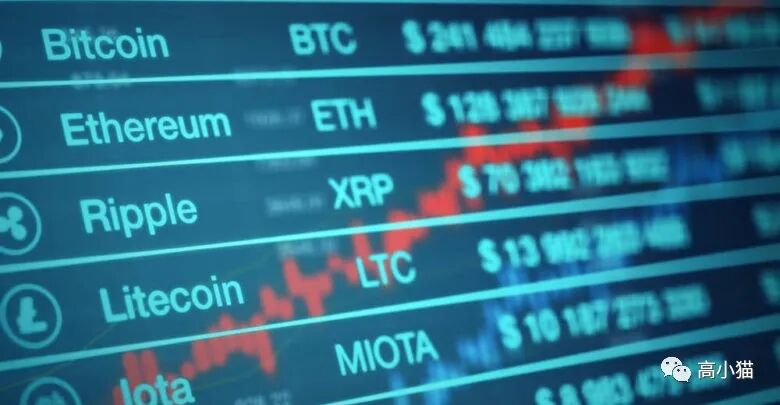
最近币圈的行情真的非常火热。很多不是币圈的朋友也开始跟我问起相关的话题了。
从各种方面来看，我觉得这一轮币圈的牛市正式进入到中期。牛市中期的标志是，圈外的群众开始被暴富效应带动，逐渐开始进入这个市场。
目前这个进入的趋势我个人觉得还属于良性，至少还没有出现coinbase，binance等挂掉的情况，说明进入的人数数量还没有特别多，所以目前进入还可以赚到钱。
而且目前BTC占总市值还远远高于50%，说明山寨币虽然有一些爆发，但是还可以更加疯狂。
最近爆发的一个版块是交易所的平台币。虽然这波行情可能已经过去了，但是我个人认为平台币实际上是最有基本面支撑的一些资产，适合懂得价值分析的人士来做投资。
我个人对于估值这一套的理论并不是很熟悉，所以就用一些三脚猫的功夫来随便分析一下。
而且接下来coinbase即将在不久之后上市。如果coinbase到时候大涨，可能会带动这些平台币进一步上涨。因此我个人觉得这个版块值得持续关注。
首先简单介绍一下各大交易所的情况。
一. 币安
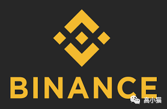
币安是全球最大的区块链交易所。它是所谓的三大所，即Binance（币安），火币，Okcoin这三个交易所的老大。币安这个交易所虽然大，但是仍然非常有创新的活力，不断推陈出新。目前它也是全世界区块链期货交易的最大市场，超越了曾经的老大bitmex。
如果说买币有一个交易所一定要注册，我个人认为那就是币安。
二. 火币
我个人也是非常喜欢火币这个平台。它也是三大所之一，而且最近火币发行的火币链的生态做得也不错。
三. OKCOIN
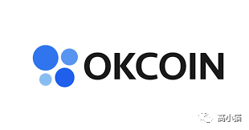
OK应该是三大所里最老牌的交易所了。但是去年由于他们的老大出事，所以曾经暂停提币了一段时间。不过不得不说，经历了这种事情以后仍然屹立不倒，才让人对它产生更多的信任。
四. MXC
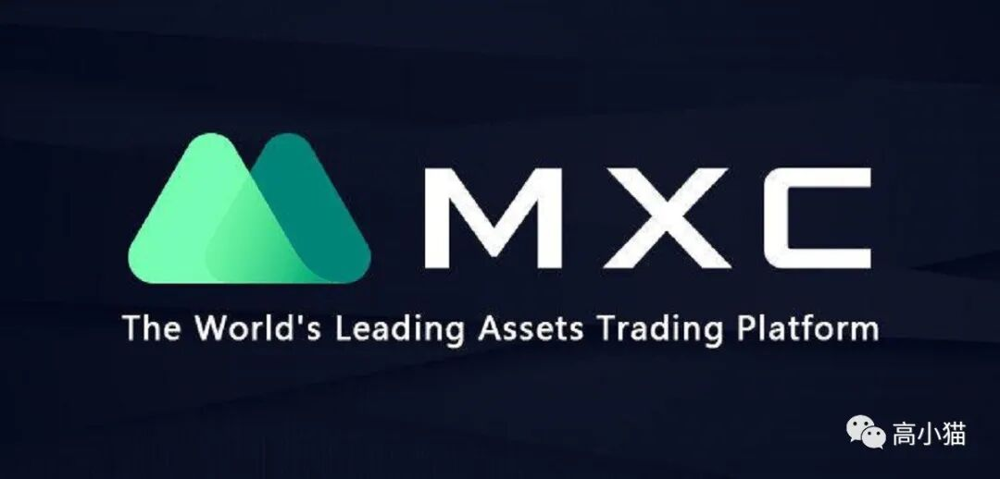
MXC是这一轮牛市的一个新兴的交易所。它之所以有名，是因为它的上币非常快，往往可以在上面买到当下最有热点的新币。常常一个项目一出来，最早会在uniswap上市，有了第一波涨幅，不久之后就会上mxc和hotbit，有了第二波涨幅，再然后才是三大所，有了最后一波涨幅。所以如果你可以在这个游戏中最早参与进去，可能可以收获很高的收益。
如果你是一个Defi玩家，可能不得不注册的一个交易所就是它。
五. FTX
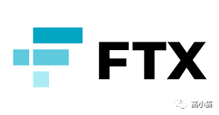
上面讲到的几大交易所都是中国走出来的。美国这里也有一个新兴的交易所，就是FTX。
在FTX上面你不仅可以买到各类区块链的币，也可以交易各种主流的美股，比如特斯拉，苹果，Google的股票。不仅如此它上面还有一个预测市场，你可以在上面下注。比如当时美国大选的时候，它上面就曾经可以购买一种票据，来下注到底是谁最终当选总统。
六. Coinbase
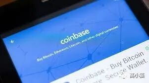
在美国这里出入金不得不用到的一个平台，也是美国这里最老牌的交易所。而且它和美国的各种银行账户都很好地打通了，在这里出入金非常方便。
七. Bitfinex
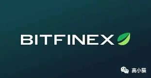
也是一个老牌的交易所平台。也是USDT的发行方。非常有实力的一家交易所。不过平台币的价值模型不太好。
交易所平台币的横向比较
所谓的交易所平台币，指的是这些交易所发行的一种代币。交易所会用交易所收取的交易手续费，定期地回购这些代币销毁。而这些代币的价值也借此得到支撑。
上面提到的这些交易所，除了coinbase以外，全部都发行了自己的平台币。
以下是我整理的一些数据。
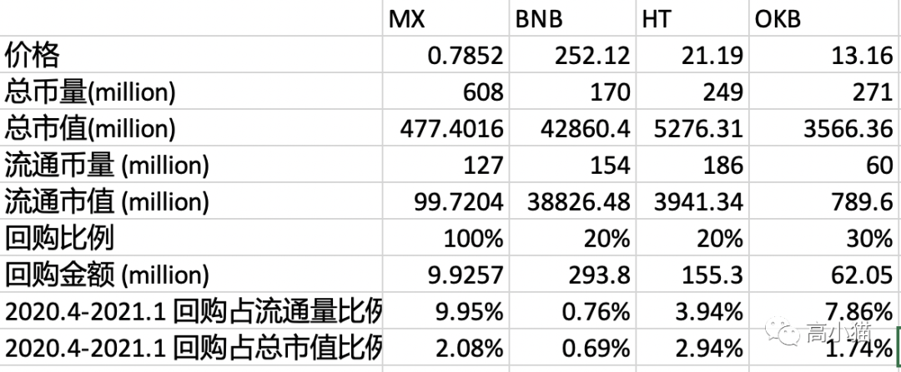
这里的价格是我在2021年2月19日截取的一些价格。
总币量查自coinmarketcap上面，总市值则是总币量乘以币价得到的。
有一些平台币有一些团队的锁仓，因此还可以看他们的流通市值。
而回购金额则是这些交易所去年2020.4 - 2021.1之间的回购金额，单位为million USD。
总体来说，这些平台的盈利能力都非常地强，而且增长非常好。如果把这些平台币作为这些平台的股票来看待的话，其实是非常优质的投资标的，尤其是今年上半年，这些平台币还没有涨起来的时候。
当然现在也还不晚。coinbase今年上市的估值预计要有1000亿美金，而当前BNB的估值其实只有42860 million，即428亿美金。BNB的交易额常年都至少是coinbase的两倍还多，因此我个人认为BNB还有很大的上升空间。
附录：
一. 平台币销毁记录
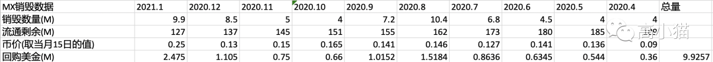
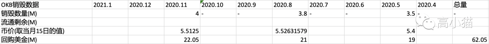
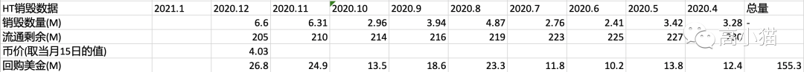
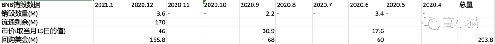
二. 区块链交易所推荐链接
如果大家对于这些交易所感兴趣，想要尝试一下，欢迎使用我的推荐链接注册，会有一定的交易手续费的减免。
Binance （币安）
https://www.binance.com/zh-CN/register?ref=IP5PMHQ5
Huobi （火币）
https://www.huobi.com/en-us/topic/invited/?invite_code=d93c8
OKcoin
https://www.okexcn.com/join/3952428
MXC
https://www.mxc.ai/auth/signup?inviteCode=14SvU
FTX
https://ftx.com/#a=8705654
coinbase
Bitfinex
https://www.bitfinex.com/?refcode=a4fAxq1eo
coinlist
https://coinlist.co/clt?referral_code=PJMZZ6